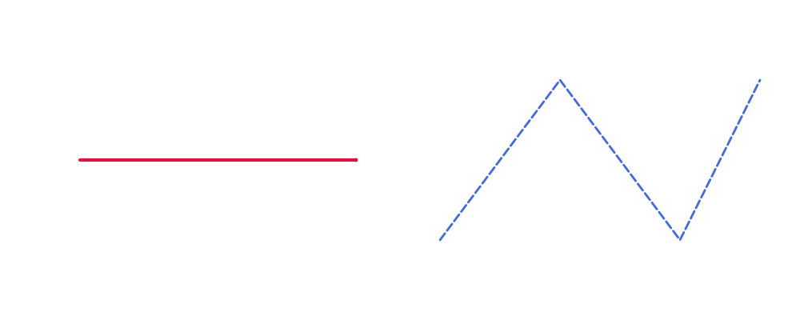
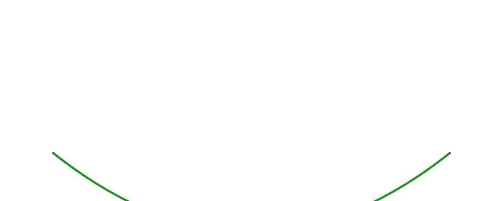

Lines & Curves Guide
Drawlib supports straight lines, polylines, curved arcs, and Bezier curves with customizable arrowheads and line styling (LineStyle).
1. Straight Lines & Polylines
from drawlib.canvas import config
from drawlib.colors import Colors, Colors140
from drawlib.lines import line, lines
from drawlib.types import LineStyle
config(width=100, height=40)
# Straight line with arrowheads
line(
xy1=(10, 20),
xy2=(45, 20),
arrowhead="->",
style=LineStyle(line_color=Colors140.Crimson, line_width=3, arrow_head_scale=1.5)
)
# Dashed lines
lines(
xys=[(55, 10), (70, 30), (85, 10), (95, 30)],
style=LineStyle(line_color=Colors140.RoyalBlue, line_width=2, line_style="dashed")
)

2. Curved Lines (line_curved)
The bend parameter specifies the curvature intensity (e.g. bend=0.3 creates a convex curve, bend=-0.3 creates a concave curve).
from drawlib.canvas import config
from drawlib.colors import Colors140
from drawlib.lines import line_curved
from drawlib.types import LineStyle
config(width=100, height=40)
line_curved(
xy1=(10, 10),
xy2=(90, 10),
bend=0.4,
arrowhead="<->",
style=LineStyle(line_color=Colors140.ForestGreen, line_width=3, arrow_head_scale=1.5)
)
